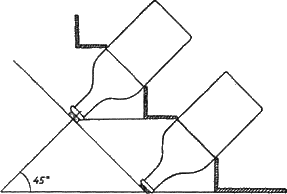

Самогон, водка и настойки. Домашнее шампанское .

Сейчас выпускается большое количество различных вин: от дорогих элитных до дешевых, доступных большому числу наших граждан. Нужно знать о том, что все вина делятся на «игристые» и «тихие». Игристыми называют любые пенистые и шипучие вина, сюда, конечно же, относится и шампанское, независимо от места производства, качества и характера.
Родиной шампанского считают Францию. Пьер Периньон, монах из аббатства в провинции Шампань, живший в середине XVII века, открыл способ приготовления напитка, который мы называем «шампанское». Вино прославило монаха вначале во Франции, а затем о нем узнал весь мир. Секрет напитка заключался в естественном насыщении белого вина углекислотой при вторичном брожении в плотно закрытых бутылках.
Этому же святому отцу принадлежит изобретение мощной бутылки, которая может выдерживать внутреннее давление газов.
Он первым стал применять в виноделии корковые пробки, которыми закупоривались бутылки. До этого при приготовлении и расфасовке вина применялась промасленная пакля.
Периньон ввел в обиход и бокал необычной формы, в котором отчетливо видна игра шампанского. Мы с благодарностью вспоминаем монаха, которому удалось получить столь прекрасный напиток.
Долгое время шампанское изготовляли в монастырях, и только в XIX появились фирмы, взявшиеся за выпуск этого напитка.
Одним из любимейших напитков французов, да и русского купечества, являлось шампанское «Вдова Клико». Вот история, связанная с этим напитком.
В XIX веке некий винодел, француз Клико, первым открыл способ получения прозрачного вина, до этого шампанское было мутным. В напиток добавляли немного цианистого калия, который способствовал выпадению осадка. В вина могли добавлять и другие химические элементы и соединения, весьма небезопасные для здоровья. Это объясняется тем, что производители шампанского того времени тесно сотрудничали с химиками. Современное производство исключает добавление в шампанское каках-либо химических соединений, тем более цианистого калия.
Франция была поставщиком шампанского и для России. Но русские отдавали предпочтение сладкому напитку, поэтому специально для России напиток изготовляли по особой технологии, рецепту, в котором количество сахара на бутылку было значительно больше, чем предпочитали французы.
Офицеры и русские купцы очень любили «Вдову Клико». После смерти мужа «царица шампанского», став владелицей фирмы, расширила производство напитка. Именно она изобрела метод, который позволяет шампанскому за сравнительно короткое время преобрести желаемое качество и превосходный вкус. Этот метод и сейчас, по прошествии уже более 200 лет, используется всеми виноделами мира.
Сейчас нередко можно услышать мнение, что настоящее шампанское – это прекрасное игристое вино, насыщенное углекислым газом, – в домашних условиях приготовить не удастся никогда.
Но как же так? Ведь знаменитый французский монах, живший еще в XVII веке, смог приготовить его в монастыре, а мы не сможем?
Нет никаких сомнений в том, что пенящийся, ароматный, вкусный, крепко газированный напиток можно приготовить и в домашних условиях. Необходимо прежде всего иметь огромное желание сделать напиток своими руками и тем самым порадовать родных и близких, собравшихся у вас в доме по случаю какого-либо юбилея, а может быть, просто так, ведь каждый день, прожитый нами, по-своему хорош и неповторим. Шампанское готовят двумя способами.
Первый – естественный способ, когда брожение происходит в закупоренных бутылках. Второй способ – когда углекислота накачивается в вино искусственно.
Однако шампанское отличается от шипучих вин прежде всего тем, что углекислота в нем образуется во время брожения. Шипучие вина, приготовленные естественным способом, имеют приятный, освежающий вкус.
Более доступным в домашних условиях является естественный способ приготовления.
Вина, приготовленные из клубники, белой смородины, райских и сибирских яблок, способствуют получению шампанского высшего качества. Но для приготовления напитка используют любое вино: вишневое, яблочное, малиновое, смородинное, крыжовниковое и т. д.
Технология приготовления шампанского включает следующие этапы:
1) брожение молодого вина в бутылках;
2) удаление осадка;
3) доливка и сдабривание;
4) закупоривание бутылок;
5) выдерживание вина.
Брожение в бутылках. Как только завершится первый период брожения сусла (это произойдет, когда в баночку с водой станет выделяться примерно 20–30 пузырьков в минуту), можно приступить к переливке вин. Затем полученное молодое вино разливают в бутылки из-под шампанского. Рекомендуется использовать только эти бутылки, так как другие недостаточно крепки и во время брожения могут не выдержать внутреннего давления газа.
В каждую бутылку добавить 2–3 сухие изюминки и 1 чайную ложку сахарного песка.
Сахар и изюм резко возбудят процесс брожения в бутылках, поэтому главное внимание следует обратить на пробки и особое закупоривание. Можно использовать пластиковые пробки, которыми ранее были закрыты эти бутылки. Толстые пробки размягчают в горячей воде, бутылки закупоривают и для удержания дополнительно обвязывают мокрым шнуром. Закупоривать лучше всего в прохладном помещении, а бутылки перед розливом подержать в холодильнике.
Хранить бутылки с вином желательно при комнатной температуре (18–21 °C), но только в лежачем положении. Для брожения вина потребуется 2~3 месяца. В течение этого времени вполне возможно, что разорвется какая-либо ие бутылок. Это предупреждение о том, что температура в помещении очень высокая, следовательно, бутылки нужно перенести в более холодное место или понизить температуру на 9—10 єС.
По прошествии приблизительно 62–65 дней, можно заметить, что брожения в бутылках не происходит, и тогда из лежачего положения их помещают в наклонное. Наклон должен быть 42–45 °. В таком положении бутылки находятся не менее 15–17 дней при температуре 10–12 °C (понижение и повышение нежелательны, рис. 11).
Для того чтобы брожение на этом этапе проходило благополучно и наклон соответствовал необходимому по технологии, следует сделать простой стеллаж. По внешнему виду он представляет собой лестницу, «ступеньки» которой сделаны из фанеры.

Рис. 11. Положение бутылки
В дереве выпиливают круглые прорези, куда и помещаются бутылки с вином. Вставлять бутылки необходимо горлышком вниз.
В течение того времени, когда бутылки будут находиться в таком положении, их необходимо ежедневно вращать (каждый раз – поворот вокруг своей оси). Это делается для того, чтобы осадок отставал от стенок бутылки и опускался к пробке. Вино посветлеет примерно через 2 недели, когда весь осадок соберется плотной массой у пробки. На этом процесс брожения закончен и следует переходить ко второму этапу приготовления шампанского.
Удаление осадка. Этот процесс требует определенной ловкости и быстроты. Проводить его лучше в погребе, при той же температуре, что настаивалось вино. Даже лучше, если температура будет на 2–3 °C ниже.
Заранее готовят острый нож, отрезки влажного шнура и новые пробки, распаренные в горячей воде.
Бутылку берут очень осторожно, чтобы не взболтать образовавшегося осадка, вынимают из прорези стеллажа, перерезают шнур, удерживающий пробку. При этом положении бутылки менять не следует.
Пробка выдавливается вином. Это необходимо контролировать прикосновением пальца, но без сопротивления. Как только пробка вылетит вместе со скопившимся винным осадком, тут же заткнуть пальцем горлышко и не дать вылиться вину. Затем бутылку переворачивают горлышком вверх и новой пробкой закупоривают вино, обвязывая для крепости шнуром. Шампанское уже готово к употреблению, поэтому проводят доливку и сдабривание.
Доливка и сдабривание. В процессе удаления осадка из бутылки вместе с образовавшейся массой неизбежно выливается и часть вина. Бутылку можно дополнить вином и одновременно «облагородить» напиток. Для этого заранее готовят настойку, ликер или вино. До нас дошли некоторые старинные рецепты, которые использовали российские виноделы для «облагораживания» домашних шипучих напитков.
Апельсиновый ликер
Апельсиновую цедру измельчить и потолочь. 800 г сахарного песка растворить и небольшом количестве коньяка (можно слегка подогреть), добавить 13 г апельсиновой цедры и залить оставшийся коньяк. Лучше всего взять стеклянный баллон, накрыть крышкой и настаивать 14–16 дней в темном месте. Этого ликера достаточно, чтобы придать отличные вкусовые качества 20 л шипучего яблочного вина. Полученный напиток процедить через двойной слой марли, тщательно закупорить и хранить в темном месте.
Клубничный ликер
Взять 800 г спелой клубники, удалить хвостики и тщательно промыть проточной водой. Оставить ягоды на 20–30 минут, чтобы стекла вода. Ягоды поместить в деревянную ступку и потолочь толкушкой. Засыпать в полученную массу 800 г сахара и оставить на сутки. Затем смесь поместить в стеклянную банку и залить 1 бутылкой коньяка. Сосуд плотно закупорить и поставить в теплое место на 18–20 дней. В течение этого времени банку необходимо 1–2 раза в день взбалтывать. Ползгченную настойку тщательно процедить через 2–3 слоя марли, слить в бутылку или банку, плотно закупорить и поставить в темное место на хранение. Такого количества ликера достаточно для того, чтобы ароматизировать 25–30 бутылок.
Ликер из крыжовника
Собрать спелые покрасневшие ягоды крыжовника (800 г), тщательно перебрать и вымыть. Разложить на полотенце и дать полежать 30 минут, чтобы стекла вода. Ягоды поместить в ступку и потолочь деревянной толкушкой. Для измельчения крыжовника мясорубку лучше не использовать, так как соприкосновение ягод с железом нежелательно – ягоды могут слегка окислиться и это изменит вкус ликера. Полученную ягодную массу засыпают 800 г сахара и оставляют на сутки, после чего помещают в чистый баллон и заливают 1 бутылкой коньяка. Плотно накрывают крышкой и настаивают. Через 2–3 недели настойка готова. Ее процеживают, отжимают ягодную массу и, разлив в приготовленную посуду, плотно закупоривают и ставят в темное место до употребления. Полученного ликера достаточно для насыщения 20–25 бутылок шипучего вина.
Малиновый ликер
Ягоды малины (800 г) перебирают, слегка промывают водой и оставляют на некоторое время, чтобы стекла вода. Затем ягоды толкут деревянной толкушкой и засыпают 800 г сахарного песка. Полученную массу оставляют на одни сутки, после чего малину перекладывают в стеклянный баллон и заливают 0,5 л коньяка. Плотно закупоривают сосуд и ставят в темное место. При комнатной температуре настаивают 18–21 день, после чего тщательно процеживают через двойной слой марли. Ликер наливают в баллон, плотно закупоривают и оставляют в прохладном месте до использования. Ликера достаточно для насыщения около 18–20 л шипучего вина.
Ликер из белой смородины
800 г ягод белой смородины перебирают, удаляют хвостики и тщательно промывают проточной водой. Раскладывают на полотенце, чтобы стёкла вода. Деревянной толкушкой разминают ягоды и добавляют сахар. Перемешивают массу и оставляют на 20–22 часа настаиваться в теплом месте. Затем заливают коньяком, плотно закупоривают и настаивают 2–3 недели, после чего процеживают через двойной слой марли и выливают в приготовленный баллон. Плотно закупоривают и оставляют в прохладном месте. Ликера будет достаточно для ароматизирования 20–25 бутылок вина.
Ликер из красной смородины
Ягоды красной смородины (800 г) перебрать и тщательно вымыть. Оставить на полотенце на 30 минут, чтобы стекла вода. Поместить в деревянную ступку и истолочь. В стеклянную банку переложить полученную массу красной смородины и высыпать 800 г сахара. При комнатной температуре настаивать одни сутки. Затем залить коньяком и настаивать 3 недели, 1–2 раза в день взбалтывая массу. Когда ликер настоится, его тщательно процедить и слить в приготовленную емкость, плотно закупорить. Хранить до употребления. Полученного ликера достаточно, чтобы придать 30–40 бутылкам шипучего вина отличные вкусовые качества.
Ликер из черной смородины
Черную смородину (400 г) перебрать и тщательно промыть проточной водой. Дать стечь воде, а затем истолочь деревянной толкушкой. В массу поместить 800 г сахара, перемешать и настоять при комнатной температуре сутки. Затем залить коньяком и настаивать 3 недели в стеклянной посуде, плотно закрыв крышкой. Полученную смесь необходимо 1–2 раза в день взбалтывать, чтобы настойка стала однородной. Через 21 день ликер процедить через двойную марлю и, слив в приготовленную банку, плотно закупорить. Хранить в прохладном месте. Ликера достаточно для ароматизации 25–30 бутылок шампанского.
Ликер, приготовленный по одному из рецептов для «облагораживания», подходит не только к шипучим винам, но и к другим самодельно приготовленным плодово-ягодным напиткам.
Ликеры должны прибавляться к вину таким образом, чтобы напиток приобретал свойственные только ему букет и вкус. Поэтому составные части настоек и ликеров точно такие же, как и у вина, только в концентрированном виде. Так, например, для ароматизации малинового вина используют малиновый ликер, для вишневого вина – вишневый ликер или настойку и т. д.
Для того чтобы проводить доливку, требуется помощник. Он должен наполнять бутылку либо через трубочку, либо через лейку и сразу же плотно закрывать новой пробкой. Бутылку обвязывают мокрым шнуром, а затем, когда шнур высохнет и стянет пробку сильнее, ее заливают парафином или сургучом.
Выдержка шипучих вин. Для того чтобы шипучее вино довести до высшего качества, необходимо время и особые условия хранения напитка. Бутылки, ароматизированные ликером, помещают в определенное место, где температура не превышала бы 6—10 °C. Придают «лежачее» положение и выдерживают 3–5 месяцев. По прошествии этого времени вино приобретает необходимые качества и превосходный аромат.
Существует множество рецептов, по которым шампанское можно приготовить в домашних условиях. Вот некоторые старинные рецепты приготовления.
Апельсиновая вода
В 9 л воды растворить 1,5 кг сахара. Поставить на медленный огонь и кипятить до тех пор, пока в кастрюле не останется 6 л сиропа. 10 апельсинов очищают от кожуры и семян и кладут в сироп. Когда сироп остынет до 20 °C, вливают полчашки жидких пивных дрожжей и чашку белого вина. Полученную смесь размешивают и помещают в деревянный бочонок. Бочонок оставляют в теплом месте для брожения на 5–6 часов. По окончании брожения снимают образовавшуюся пену на поверхности жидкости, добавляют 3 л белого вина, перемешивают и ставят в холодное место. Настаивают в течение 2–3 недель, после чего, сцедив и отфильтровав, разливают в бутылки из толстого стекла.
Апогаре
Взять 6 лимонов, разрезать ломтиками и выбрать все семена. 2,5 кг изюма истолочь деревянной толкушкой и смешать с лимонами. Залить
10 л воды и поместить эту смесь в деревянный бочонок, который поставить в прохладное место. Настаивать 12 дней, после чего процедить и разлить в бутылки.
Этот напиток употребляют с сахаром.
Березовка
Готовят ее из натурального березового сока, который получают весной, когда прошли зимние морозы. С южной стороны дерева маленьким буравчиком проделывают отверстие сверху вниз и 6 см в глубину. В это отверстие вставляют трубочку и подставляют под нее сосуд. Как только набрали сока, его сразу следует разлить в бутылки. В каждую бутылку кладут по 1 ломтику лимона вместе с цедрой (но без семян), 5 ягод изюма, кусочек винного камня, величиной с маленькую горошину, 1 чайную ложку спирта или хорошего коньяка. Бутылки с содержимым плотно закупоривают, смолят, помещают в погреб на 1,5 месяца. Этого времени будет достаточно, чтобы получился напиток высокого качества и чудесного аромата.
Водица
Взять 10 л воды, добавить 3 бутылки ягодного сока и 1,2 кг сахара. Поставить на огонь и кипятить 20–30 минут. Полученный сироп остудить до 31 єС, после чего добавить винных дрожжей и оставить в теплом месте для брожения. Когда настойка отбродит, ее следует процедить через фланель и разлить в бутылки из-под шампанского. Перед тем как плотно закупорить, в каждую положить 1 кусочек сахара-рафинада и 1–2 изюминки. Бутылки засмолить и поставить в погреб. Через 2 недели напиток достаточно настоится и готов к употреблению.
Изюмная вода
30 л воды вскипятить и остудить до температуры парного молока. 4 кг изюма истолочь в деревянной ступке и поместить в бочонок. Залить 30 л воды. Лимоны очистить от цедры, а мякоть – от косточек. Цедру и мякоть также сложить в бочонок. Влить 1 столовую ложку дрожжей и поставить в достаточно теплое место для брожения. Настаивать в течение суток, после чего бочонок поместить в холодный погреб на 12 дней. Затем содержимое процедить, разлить по бутылкам и положить в каждую по 3 изюминки. Бутылки плотно закупоривают и ставят в погреб на хранение. Через 14–15 дней напиток готов и его можно употреблять, лучше всего с сахаром.
Имбирная вода
Лимон порезать на куски вместе с цедрой, удаляя при этом семена.
На дно приготовленной эмалированной кастрюли сложить дольки лимона, засыпать 1 кг сахара, 32 г толченого имбиря и 15 г винного камня. Все залить 5 л воды и поставить на огонь. Варить в течение 30 минут, но ни в коем случае не кипятить.
Затем снять с огня и добавить столовую ложку пивных дрожжей и дать бродить в течение одних суток. После чего все процедить через двойной слой марли, разлить по бутылкам и плотно закупорить и хорошо закрутить проволокой. Бутылки хранить в погребе, разложив на песке. Через неделю получится отличная имбирная вода, готовая к употреблению.
Лимонная вода
Из 2 кг сахара и 10 л воды варят сироп на медленном огне. Нагревают в течение 2–3 часов, пока в кастрюле не останется 6–7 л сиропа.
Лимоны очищают от кожуры и семян, режут кружочками. Помещают в уваренный сироп, который ставят охлаждать. Когда жидкость остынет до температуры 20–21 °C, вливают полчашки пивных дрожжей и чашку белого вина. Часа через два добавляют остальное вино. По окончании брожения емкость переносят в прохладное место (можно в погреб) и настаивают три недели, после чего раствор процеживают, фильтруют и разливают в бутылки. Лучше всего подойдут бутылки с толстым стеклом. Хранят в погребе или любом прохладном помещении.
Померанцевая вода (или водаиз грейпфрутов)
8 спелых померанцев (или грейпфрутов) режут кружочками и пересыпают сахаром (2 кг). Заливают 10 л воды и ставят на огонь кипятить.
На медленном огне варят в течение часа, после чего снимают. Для приготовления померанцевого сиропа лучше всего подойдет эмалированная кастрюля, которая во время кипячения раствора плотно накрывается крышкой.
Затем, остудив сироп, сливают жидкость с кусочками померанцев в деревянный бочонок, в который кладут корку и мякоть лимона, так чтобы ни одно семя не попало в сироп. Вливают 4 бутылки белого столового вина и 1 столовую ложку дрожжей. Полученную смесь настаивают в достаточно теплом месте (можно даже в русской печи). Через 2 суток опускают в холодное место на 14–15 дней. После чего напиток процеживают и разливают по бутылкам. Горлышко каждой бутылки завязывают проволокой и смолят. Для хранения бутылок с таким напитком нужно выбрать холодное место и пересыпать их песком.
Яблочная вода
В зависимости от имеющегося количества яблок подобрать деревянную бочку. Яблоки тщательно перебрать, промыть проточной водой и поместить в бочонок, который плотно закупорить. Вода готова к употреблению через 2–3 недели, после чего ее необходимо вылить, а в бочонок залить свежей. Настоянную воду разлить по бутылкам, поместив в каждую по 2–3 ягодки изюма и 1 чайной ложке сахара. Бутылки плотно закупорить и поставить в прохладное место на хранение.
Домашнее шампанское
В 15 л воды растворить 2 кг сахара и поставить на медленный огонь. Как только вода закипит, огонь уменьшить и томить 4–5 часов. Полученный сироп поместить в деревянный бочонок и остудить. Когда вода остынет до температуры парного молока, влить полбутылки дрожжей и поставить в теплое место для брожения. Спустя час, после того как начнется брожение, воду разлить по бутылкам, поместив в каждую 1 кусочек сахара-рафинада и 1–2 капли лимонной эссенции. Бутылки плотно закупорить, засмолить и поставить в погреб на хранение. Если через 3 недели напиток начнет пениться, как шампанское, то его можно употреблять.
Шампанское из можжевеловых ягод
Ягоды можжевельника слегка помять, поместить в деревянный бочонок, добавить мякиш горячего хлеба и залить кипятком. Плотно закупорив, дать настояться и перебродить. Настойку разлить по бутылкам, в каждую добавить 1 столовую ложку спирта или коньяка, 1 кусочек сахара-рафинада и 2–3 изюминки. Плотно закрыть, засмолить и хранить в прохладном месте, пересыпав песком.
Шипучка «Шампанское»
Готовят сироп из 1 кг сахара и 10 л воды, сок из 5 лимонов. Сок смешивают с сахарным сиропом и помещают в деревянный бочонок. Когда напиток остынет до 22–23 °C, в бочонок выливают стакан пивных дрожжей и оставляют в теплом помещении для брожения. После того как смесь перебродит, с нее снимают пену, аккуратно сцеживают, чтобы не взболтать образовавшегося осадка, и переливают в другую посуду. Затем тщательно фильтруют и смешивают с водкой. Разливают в пивные бутылки, в каждую добавляют 1 кусочек сахара-рафинада и 2–3 капли лимонной эссенции. Бутылки плотно закупоривают и ставят на хранение в погреб. Через 1,5–2 месяца напиток готов к употреблению.
Черносмородинное шампанское
Рецепт № 1
Ягоды черной смородины (1,2 кг) тщательно перебирают, удаляют мусор и хвостики, моют проточной водой.
Все ягоды помещают в приготовленную емкость, заливают 2,5 л кипяченой воды и 1,5 л хорошей крепкой водки. Закрывают и ставят на солнце настаиваться, каждый день взбалтывая, 2 недели, после чего смесь процеживают, добавляют 800 г сахара и выносят в холодное место. Лучше всего сахар растворить в небольшом количестве настоянной жидкости, а лишь потом смешать с общей массой. Настойку, насыщенную сахаром, оставляют на 20 дней в холодном месте. После чего заносят в теплое помещение и разливают по бутылкам. Прежде чем закупорить, в каждую бутылку положить 1 кусочек сахара-рафинада.
Рецепт № 2
Ягоды черной смородины нужно брать непременно зрелые. Удалить стебельки и тщательно вымыть проточной водой. Оставить на некоторое время, чтобы стекла вода. Если ягод берется небольшое количество, то их можно разложить на полотенце. С помощью соковыжималки получить сок из ягод и выжимки не выбрасывать, а положить на некоторое время в холодное место. Затем взять чистой родниковой воды такое же количество, что и сока смородины. Жидкости смешать, добавить сахар и влить в деревянный бочонок, который необходимо поместить в погреб и поставить таким образом, чтобы он во время брожения находился без движения. Настаивать 14–15 дней. Когда вино перебродит и осядет, тогда в бочонок помещают смородинную массу. Бочонок плотно закрывать не следует, чтобы туда попадало немного воздуха. Как только из бочонка не будет слышаться шипения и шума, втулку следует плотно закрыть. Настаивают 5–6 месяцев в деревянной посуде, после чего разливают по бутылкам, предварительно процедив и отфильтровав. Хранить лучше всего в погребе, пересыпав посуду песком.